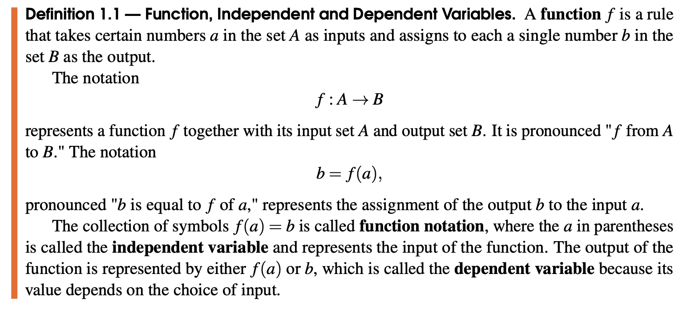

They all provide good advice and the main idea they all emphasize is that reading math (or really any technical writing) is going to take time and require your active involvement in order to understand what is written. However, you only have a limited amount of time in your day and you probably also have a very heavy workload, so you will need to read strategically, as well as actively.
Keep in mind as you read this section that you will need to take these ideas and experiment with them to find a system that works best for you. Just as everyone learns in different ways, everyone has a different way of reading that works best for them. If you have never learned mathematics by reading before, be patient with yourself and expect to improve over time as you adjust to the new format and refine your workflow.
Here are some bits of general, practical advice to keep in mind while reading a math textbook. Some will work better for you and some will not, but you should keep an open mind about them all. If your methods are not producing the results you want, look through this list again and adopt some new methods that look like they will help with the issues you have identified.
You will almost certainly not understand or remember everything after a single reading! Expect to return to your notes and the textbook several times in order to fully grasp the material.
You may wish to skim through quickly first before reading a section in depth. Other people prefer to go through slowly first for details and then reread briefly to get the big picture. Try one or the other, depending on how much time and patience you have at the time.
If you are very confused by the reading before coming to class, return to the textbook after class and reread it to see how your new understanding helps the ideas fit together.
Return to definitions, theorems, formulas, and examples while working through homework problems. In particular, find any examples that seem to solve a similar problem.
\text{ Do not } read through the textbook as a way to study for exams unless you have a specific purpose in doing so (creating a concept map, listing definitions, summarizing formulas,…). Reading the textbook without actively engaging with it is not an effective method of studying. See Section 0.3 for tips on studying mathematics.
Read with paper and pencil (or tablet and stylus) nearby.
You should take notes (especially of definitions and theorems) in a dedicated place in your notebook or tablet. Put key words in the margins so you can quickly skim your notes to find information. Underline or highlight as you would like, but be careful not to overuse such markings. Periodically summarize the big ideas of what you are reading, either by using appropriate headers or at the margins of your paper. If you do not already have your own note-taking method, I recommend the Cornell Note Taking System. You can find details at https://lsc.cornell.edu/how-to-study/taking-notes/cornell-note-taking-system/. This involves organizing your page into multiple sections to capture different types of information: notes, cues (could be questions or key words), and summary. Math makes the most sense when you see it done out in front of you. One of the main challenges to reading mathematics is following lengthy computations. Working through these on paper at the same time as reading will help you follow each step, as well as pinpoint when you stop being able to follow the computation. This may not be the best to do the first time you read, however, as you may get lost in the details and forget why you were doing the computation. However, if you feel your eyes glazing in over in the middle of a lengthy equation, writing it down will help you focus, capture all of the details, and retain it in your memory.
If something doesn’t make sense, write down (in your notes) an explicit question that could help you understand. Flag your notes with post-its or stars or some other way that you can easily find them again; this is a benefit to Cornell notes as there is a separate area for questions. As you read more, you may answer your own questions and can add those answers to your notes. If not, you will want to be able to find these questions to ask them during class, office hours, or tutoring.
Avoid distractions while reading and choose your work environment deliberately.
You may be able to read a novel or magazine with Netflix in the background or chatting with friends. If you read math and are not really concentrating on it, you will get very little out of it, and it will seem more difficult than it really is. 30 minutes spent focusing solely on your reading is more beneficial than spending 3 hours "reading" while distracted. If you are reading as part of a study group, make sure to set some ground rules about how often people are allowed to ask questions. Experiment with different environments to find what allows you to focus best. Silence the notifications on your phone/computer/tablet while you are reading! If that makes you uncomfortable, set a timer to check your notifications periodically (no more than every 15 minutes). Listening to music may be too distracting for you, or it may help you resist other distractions. Vary the type of music you listen to; some people prefer anything familiar while others need soothing or loud music. You may work better in a familiar environment, such as your dorm room, or you may need an impersonal space, such as the library. You may need a quiet, still space, or you may need ambient noise and bustle. Consider drinking water or another beverage while reading, or rewarding yourself periodically with a small snack such as an M&M. Mathematicians famously like to work in coffee shops, both for the ambient noise and the ease of obtaining more caffeine! Lastly, you will need to find what time of day works best for you for reading. You may prefer to read first thing in the morning when your brain is fresh, or you may think best in the evening or late at night when you do not have to think about what to do for the rest of the day. You may be forced to read at a particular time based on your schedule, but try to pay attention to when during the day your brain seems the most ready to focus and work.
Even though the details of mathematics are important, the way that they fit together to work toward a larger goal give them real meaning. For each section you read, make sure you know the key ideas that are introduced as well as how they relate to the key ideas of previous sections. Cornell Notes (linked above) are great at helping to do this as they provide an explicit section of the page in which to summarize what you’ve learned. As you go through a calculation, always remember why that calculation is being done. What problem does it solve? What larger goal do the symbols represent? As you read an example, think about what definitions and theorems it illustrates, or if it shows how a mathematical concept can be used beyond the classroom. Ask what the motivation is behind the definitions and formulas; why was it worth inventing them in the first place?
In mathematics, every symbol and word counts, each sentence contributes to the bigger picture, and every diagram, table, and figure is purposeful. If you are at all uncertain about the meaning of a term or symbol, look it up or ask someone to explain it. Keep a list of new vocabulary. Pay attention to how symbols are used within mathematical expressions. For example, there is a vast difference between the symbols \(=, \approx\text{,}\) and \(\rightarrow\) in mathematics. You probably won’t have time to work through every example while you read, but at some point, make sure you know how to get from each step of a calculation to the next. In particular, be sure to notice when a definition, theorem, or formula is being applied, or if there is some other short-cut being used to get from one line to the next. Being able to follow a solution is a precursor to being able to solve problems for yourself. You may need to reread sentences a few times in order to fully understand what they are saying. Pay particular attention to how it relates to the material that has come before and how it fits into the current context. Is it introducing a new idea, building on an old idea, supporting a previous statement, pointing out something important, … ?
This textbook contains all of the content you are responsible for, but that doesn’t mean that it will contain enough examples or make perfect sense for every concept it introduces. Use other books, people, and technology to get answers to your questions and other perspectives on material that does not make sense to you. Do a quick internet search based on your questions, or ask your classmates, instructor, or tutors. YouTube is an excellent resource for modern learners of mathematics! However, be careful to find reputable sources for your information. Some of the best channels I’ve found are:
The most important thing to do while reading math is to find a system that works for you and to make the content that you are learning relevant to your own interests. Everyone has a different set of tools and a different level of "chunking up" complicated ideas. Make the idea fit in with your own perspective and experience. Some people are most satisfied when they see a mathematical idea unfold from start to finish, following an idea from its origins and rediscovering why it is true, either via logical reasoning or experimentation. Other people need to contextualize information in a real-world context, in which case they prefer to motivate an idea with an application or tangible problem. Research shows 2
Association for Psychological Science. "Curiosity is critical to academic performance." ScienceDaily. ScienceDaily, 28 October 2011. https://www.sciencedaily.com/releases/2011/10/111027150211.htm accessed August 10, 2022 and Gruber, Gelman, Ranganath. "States of Curiosity Modulate Hippocampus-Dependent Learning via the Dopaminergic Circuit" Neuron, 2 October, 2014. https://doi.org/10.1016/j.neuron.2014.08.060 accessed August 10, 2022.
that curiosity is the key to learning and academic performance, so find some nugget of information that you find interesting and use it to spark your curiosity in mathematics as a subject.
The last section held general advice. This one contains specific directions for making sure you catch the most important parts of your reading. Pay special attention to definitions, examples, and theorems in a math text. They generally contain the most useful information and are the structure used to organize a mathematical text.
Definitions.
Mathematics uses words very precisely, and not always in the same way that you would use them in your daily life. Mathematical definitions give the precise meaning of certain words that are meant to represent a specific idea. Words are typically written in bold the first time they are defined, which is intended to make them stand out from the surrounding text. If they are especially important, they are numbered and labeled, like so:

Figure0.1.2.The words function, function notation, independent variable, and dependent variable are defined. The definition is numbered and has an orange bar to the left to make it more visible.
The above definition may or may not make sense to you or agree with what you think of when you hear the word "function." If you don’t immediately understand a definition, you may need to come back to it again later after reading some examples, asking questions, or finding alternate explanations of the term via Google or YouTube. When you encounter a new mathematical definition, you should write the term in your notes along with the accompanying definition, along with any other ideas that help you to understand it. While trying to be as precise as possible, write the mathematical meaning of the word in your own words, potentially accompanied by an example or two to help understand what the definition is intended to mean.
A mathematical Theorem is typically extremely important. If definitions are stones and examples show you how to put them together, then a theorem is a finished archway or wall. It is a mathematical fact, formula, classification, or connection between ideas that is especially useful for some purpose or is the culmination of a string of ideas leading to a particular goal. Think of mathematical knowledge as the city that is made up of houses constructed from the walls and archways of Theorems. Figure0.1.3.Definitions are put together to form Theorems. Theorems fit together to form a body of knowledge, such as the Theory of Calculus.
Theorems can also be called Propositions, Corollaries, or Lemmas, though we will not get into the distinction between these, and are typically so important that they are separated from the surrounding text in a shaded box. They are numbered so that they can be referred to easily:
Theorem 1.1 is a "classification" and gives a visual condition that categorizes a graph as either a function or not a function. The theorem also has a name by which it is commonly referred: the Vertical Line Test. Names of theorems often serve to remind us of their contents, though sometimes they refer to the person who discovered the theorem.
Theorem 1.3 tells us a mathematical "fact" about products of numbers or expressions that are equal to zero. This is a very important property that relies on the theoretical structure of real numbers and real-valued functions. Theorem 1.3 is also the connection between the algebraic method of factoring and the task of solving an equation. Whenever you see a theorem, you should add it to you notes and take extra special care that you understand the purpose and meaning of the theorem. Because this course will not focus on mathematical proofs (logical arguments that explain rigorously why a theorem is true), you may or may not fully understand why a theorem is always true. The text should provide enough examples to suggest why it is true, or you could come up with a few more examples on your own if you are not yet convinced.
It’s not usually possible to get a full understanding of a concept without seeing it used a few times. The purpose of examples is to build your intuitive understanding, either by motivating an idea, clarifying details of a definition, theorem, or formula, showing how the idea can be used in context or to solve a problem, or providing multiple viewpoints from which to think about an idea. They may be mentioned briefly in a paragraph and you will have to recognize them via key words like, "For instance…" and "… such as…". Other times, they are contained in separate environments meant to call more attention to them:
Example 1.1 follows immediately after Definition 1.1 in the text and illustrates the idea of a function introduced there, as well as the terms independent and dependent variable. It also introduces a new symbol and its meaning, the set \(\mathbb{R}\) of all real numbers. If Definition 1.1 did not make sense to you when you read it earlier, return to it and compare it with this example to see how the abstracted ideas in the definition are made more concrete in this example.
Example 1.23 follows Theorem 1.3 in the text as shown. It begins with an expression that was factored in a previous example, and demonstrates how the property of multiplication in Theorem 1.3 allows us to set each of the factored expressions equal to zero and solve in order to determine where the full expression is equal to zero. The example goes on to contextualize the calculation graphically and provides a clickable link to a Desmos graph (you should always click on these as you are reading) in order to verify that the algebraic work is correct. A "non-example" is typically an example of something that does not fit a mathematical idea.
Example 1.8 illustrates how Theorem 1.1, the Vertical Line Test, is applied, and also provides an example of a graph that is NOT a function, meaning a "non-example" of a function. Non-examples are often just as enlightening as examples, if not more-so, because they show the limitations of the mathematical idea.
The four examples above illustrate definitions and theorems found in the text. Example 1.23 also makes connections to methods demonstrated in another example and a way of verifying and visualizing the result of a calculation. Some examples may illustrate a general method of solving a category of problems. Motivational examples may give you an intuitive or contextual introduction into an idea, while applied examples show you how a mathematical idea can be used in a real-world problem.
Here is a list of strategies to experiment with that can help you get the most benefit from the examples provided in the textbook. You do not have to implement all of them all of the time, but should consider these as suggestions to add to your toolbox of reading strategies:
Whenever you see an example, you should always think about what purpose it is serving. A good question to ask yourself is, "How is this an example of what I was just reading?"
Some examples will pose a problem to be solved and demonstrate how to solve it. Think about how to answer the problem, even for just a moment, before you read the solution. If you don’t know where to start or were very wrong, you know you did not understand the concept underlying the example and may want to skim over earlier material again after reading the solution.
Summarize the main idea of an example after reading it and how it relates to the definition, theorem, formula, idea, etc. that it is meant to illustrate.
Make note of any questions that come into your mind as you read the example, such as how to get from one step of a calculation to the next, or whether the same idea could be used in a different context.
Key ideas: Reading mathematics requires you to be actively involved in order to understand what is written. You will have to find a balance between efficiency and thoroughness in order to effectively learn from a mathematical text without spending hours and hours reading. This will likely take some experimentation with different strategies, so be patient and give yourself time to build this important skill.